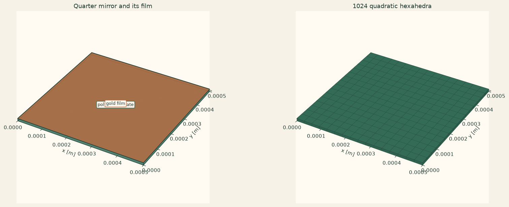

Docs › Examples › Curvature of a prestressed micromirror
Thin-film stress · 3D
Curvature of a prestressed micromirror
A polysilicon micromirror plated with a gold film whose residual tensile stress bends it into a shallow bowl.
Run locally with OneSimulation. The example downloads are free. Running them requires an activated runtime. Runtime Alpha 0.2.1a7 · CPython 3.13 on macOS (Apple Silicon), Ubuntu 22.04 (x86-64), and Windows x64. Installation and activation · View pilot plans. Scope of the reference checks.

What it computes
OneSimulation reads the mirror and the film from two STEP files, gives each layer its own material and solves 3D linear elasticity on quadratic hexahedra with the residual stress entered as a thermal misfit strain of the film; a quarter is modelled with symmetry planes. The script that builds the STEP files comes with the notebook.
What it checks
The curvature is 13.443 1/m against 13.436 1/m from the bilayer plate formula (+0.05 %); Stoney's thin-film formula overestimates it by 8.8 % because the 0.5 µm film is not negligible against the 10 µm plate; the film keeps 87.7 MPa of its 100 MPa residual stress.
Geometry
The notebook starts at the import of the CAD files prestressed_micromirror_curvature.step, prestressed_micromirror_curvature_film.step: STEP (AP242), readable by any CAD program, with the names of the faces that the boundary conditions use. Put them next to the notebook.

The geometry script
The script prestressed_micromirror_curvature_geometry.py builds the geometry with the CAD objects of OneSimulation and writes the files. Change a dimension there, run it, and run the notebook again.
"""Geometry of the OneSimulation example "Curvature of a prestressed micromirror".
Builds one quarter of a square micromirror, 1 mm x 1 mm, made of a 10 µm polysilicon plate
plated with a 0.5 µm gold film on top, with the CAD objects of OneSimulation. The whole stack is
written to prestressed_micromirror_curvature.step (faces x_min, x_max, y_min, y_max, z_min,
z_max; x_min and y_min are the symmetry planes through the centre of the mirror); the film, which
marks the region of the second material, is written to prestressed_micromirror_curvature_film.step.
"""
from onesim.cad.d3 import Box
half_side, plate, film = 500e-6, 10e-6, 0.5e-6
mirror = Box(length=half_side, width=half_side, height=plate + film)
coating = Box(length=half_side, width=half_side, height=film, origin=(0.0, 0.0, plate))
mirror.save("prestressed_micromirror_curvature.step")
coating.save("prestressed_micromirror_curvature_film.step")The notebook
The complete notebook, cell by cell. Run it to produce the figures and the comparison printout.
Thin films deposited on a substrate are rarely free of stress. A metal film plated onto a micromirror tries to contract, the plate resists, and the pair bends into a spherical bowl. In MEMS this is both a nuisance (mirrors that should be flat) and a tool (curled actuators and springs).
The mirror is a square polysilicon plate, 1 mm wide and \(t_s=10\) µm thick, with a gold film of \(t_f=0.5\) µm on its upper face. The residual stress comes from the film being deposited 63.3 K above the operating temperature: with the thermal expansion coefficients of gold and polysilicon the misfit strain is \(\varepsilon^*=(\alpha_f-\alpha_s)\,\Delta T=-7.34\cdot10^{-4}\), which in a film held flat is an equibiaxial tension of \(\sigma_f=-E_f\varepsilon^*/(1-\nu_f)=100\) MPa.
| layer | \(E\) [GPa] | \(\nu\) | \(\alpha\) [1/K] |
|---|---|---|---|
| polysilicon plate | 160 | 0.22 | \(2.6\cdot10^{-6}\) |
| gold film | 79 | 0.42 | \(14.2\cdot10^{-6}\) |
Only a quarter is modelled: the planes \(x=0\) and \(y=0\) through the centre are symmetry planes, and the centre line is held vertically. The stack comes from prestressed_micromirror_curvature.step, the film region from prestressed_micromirror_curvature_film.step; the script prestressed_micromirror_curvature_geometry.py builds both with the CAD objects of OneSimulation.
Reference. With the biaxial moduli \(E'=E/(1-\nu)\), \(m=t_f/t_s\), \(n=E_f'/E_s'\) and \(h=t_f+t_s\), the bilayer formula of Timoshenko (J. Opt. Soc. Am. 11 (1925) 233) gives the curvature
and for a very thin film it reduces to Stoney's formula (Proc. R. Soc. London A 82 (1909) 172), \(\kappa=6\sigma_f t_f/(E_s' t_s^2)\), see L. B. Freund and S. Suresh, Thin Film Materials, Cambridge University Press (2003), Ch. 2.
from dataclasses import replace
import numpy as np
from onesim.cad.exchange import load
from onesim.materials import IsotropicSolid
from onesim.meshing import Piecewise, StructuredHexahedralMesher, Uniform
from onesim.numerics import Numerics
from onesim.numerics.fem import FiniteElement, Lagrange
from onesim.numerics.field_transfer import FiniteElementEvaluation
from onesim.numerics.linear import SparseDirect
from onesim.physics.heat_transfer import FixedTemperature, HeatConduction
from onesim.physics.solid_mechanics import (
FixedDisplacementComponents,
IsotropicThermalExpansion,
LinearElasticity,
TractionFree,
)
from onesim.simulation import Problem, Simulation, regionwise
from onesim.simulation.field_connections import FieldCoupling
from onesim.visualization import plots, theme
theme.set()Geometry and mesh
Quadratic hexahedra: 16 x 16 across the quarter, three layers through the plate and one through the film.
mirror, film = load("prestressed_micromirror_curvature.step"), load(
"prestressed_micromirror_curvature_film.step"
)
faces = mirror.boundaries
half_side, _, total = mirror.size
film_thickness = film.size[2]
plate_thickness = total - film_thickness
mesh = StructuredHexahedralMesher(
cells=(16, 16, 4),
grading=(
Uniform(16),
Uniform(16),
Piecewise(((plate_thickness, Uniform(3)), (film_thickness, Uniform(1)))),
),
).generate(mirror)
view = plots.Camera(elevation=35, azimuth=-60)
fig = plots.figure(1, 2, size=(15, 5.5))
plots.geometry(
[mirror.named("polysilicon plate"), film.named("gold film")],
camera=view,
title="Quarter mirror and its film",
ax=fig[0],
)
plots.mesh(
mesh,
groups=("all",),
legend=False,
camera=view,
title=f"{mesh.cell_count} quadratic hexahedra",
ax=fig[1],
)
plots.show()Model
The properties of the two layers are given region by region. A heat-conduction solve with the operating temperature on all faces provides the temperature field, which enters the elastic model as thermal strain relative to the deposition temperature.
layers = {"plate": (160e9, 0.22, 2.6e-6), "film": (79e9, 0.42, 14.2e-6)}
deposition, cooling = 358.15, 63.3
layered = lambda index, unit: regionwise(
((film, layers["film"][index]),), default=layers["plate"][index], unit=unit
)
material = replace(
IsotropicSolid(
density=2330.0,
specific_heat_capacity=700.0,
thermal_conductivity=100.0,
youngs_modulus=1e9,
poisson_ratio=0.3,
thermal_expansion_coefficient=1e-6,
),
youngs_modulus=layered(0, "Pa"),
poisson_ratio=layered(1, "1"),
thermal_expansion_coefficient=layered(2, "1/K"),
)
numerics = Numerics(
spatial=FiniteElement(element=Lagrange(order=2)), linear_solver=SparseDirect()
)
heat = HeatConduction(domain=mirror.volume, material=material)
operating = Simulation(
problem=Problem(
name="Operating temperature",
geometry=mirror,
physics=(heat,),
boundary_conditions=(
FixedTemperature(
boundary=faces.all, physics=heat, value=deposition - cooling
),
),
),
mesh=mesh,
numerics=numerics,
).solve_stationary()
solid = LinearElasticity(
domain=mirror.volume,
material=material,
thermal_strain=IsotropicThermalExpansion(reference_temperature=deposition),
)
problem = Problem(
name="Prestressed micromirror",
geometry=mirror,
physics=(solid,),
boundary_conditions=(
FixedDisplacementComponents(
boundary=faces.x_min,
physics=solid,
components=("x", "z"),
where={"z": lambda x, y, z: y < 1e-12},
),
FixedDisplacementComponents(
boundary=faces.y_min, physics=solid, components=("y",)
),
TractionFree(
boundary=faces.x_max | faces.y_max | faces.z_min | faces.z_max,
physics=solid,
),
),
couplings=(
FieldCoupling(
source=operating.field(heat.temperature),
target=solid.temperature,
transfer=FiniteElementEvaluation(),
),
),
)
result = Simulation(problem=problem, mesh=mesh, numerics=numerics).solve_stationary()
displacement, stress = result.field(solid.displacement), result.field(solid.stress)Results
The curvature follows from a parabola \(w=\kappa r^2/2\) fitted to the deflection of the mid-plane along the two symmetry lines; the film stress is read in the middle of the film near the centre.
(Es, nus, alphas), (Ef, nuf, alphaf) = layers["plate"], layers["film"]
misfit = (alphaf - alphas) * cooling
m, n = film_thickness / plate_thickness, (Ef / (1 - nuf)) / (Es / (1 - nus))
bilayer = (
6
* misfit
* (1 + m) ** 2
/ (total * (3 * (1 + m) ** 2 + (1 + m * n) * (m**2 + 1 / (m * n))))
)
stoney = (
6
* (Ef / (1 - nuf) * misfit)
* film_thickness
/ (Es / (1 - nus) * plate_thickness**2)
)
r = np.linspace(0.0, 0.95 * half_side, 40)
along_x = displacement.evaluate(
np.column_stack((r, 0 * r, np.full_like(r, plate_thickness / 2)))
)[:, 2]
along_y = displacement.evaluate(
np.column_stack((0 * r, r, np.full_like(r, plate_thickness / 2)))
)[:, 2]
curvature = 2 * np.polyfit(np.r_[r, r] ** 2, np.r_[along_x, along_y], 1)[0]
film_stress = stress.evaluate(
[[0.1 * half_side, 0.1 * half_side, plate_thickness + film_thickness / 2]]
)[0]
print(
f"curvature: simulation {curvature:.3f} 1/m, bilayer formula {bilayer:.3f} 1/m ({100 * (curvature / bilayer - 1):+.2f} %), "
f"Stoney {stoney:.3f} 1/m ({100 * (curvature / stoney - 1):+.2f} %)"
)
print(
f"radius of the bowl {1 / curvature * 100:.2f} cm, rise of the mirror corner {1e6 * displacement.evaluate([[half_side, half_side, total]])[0, 2]:.3f} µm"
)
print(
f"film stress near the centre: σ_xx {film_stress[0] / 1e6:.1f} MPa, σ_yy {film_stress[1] / 1e6:.1f} MPa "
f"(flat film: {Ef / (1 - nuf) * misfit / 1e6:.1f} MPa, less the share relieved by the bending)"
)Figure
The vertical displacement of the mirror (magnified 50 times), the deflection along the two symmetry lines against the bilayer and the Stoney parabolas, and the stress \(\sigma_{xx}\) through the thickness at the centre.
z = np.linspace(1e-9, total - 1e-9, 60)
through = stress.evaluate(
np.column_stack(
(np.full_like(z, 0.1 * half_side), np.full_like(z, 0.1 * half_side), z)
)
)[:, 0]
fig = plots.figure(1, 3, size=(19, 5.5))
plots.surface(
displacement,
component=lambda u, position: 1e6 * u[:, 2],
deformation=displacement,
deformation_scale=50.0,
symmetry={"planes": [((1, 0, 0), (0, 0, 0)), ((0, 1, 0), (0, 0, 0))]},
camera=view,
label="u_z [µm]",
title="Bowl of the mirror, magnified 50 times",
ax=fig[0],
)
plots.line(
points={
"along x": (1e3 * r[::2], 1e6 * along_x[::2]),
"along y": (1e3 * r[1::2], 1e6 * along_y[1::2]),
},
reference={
"bilayer formula": (1e3 * r, 1e6 * bilayer * r**2 / 2),
"Stoney": (1e3 * r, 1e6 * stoney * r**2 / 2),
},
xlabel="distance from the centre [mm]",
ylabel="deflection of the mid-plane [µm]",
title="Deflection along the symmetry lines",
legend="upper left",
ax=fig[1],
)
plots.line(
points={"simulation": (through / 1e6, 1e6 * z)},
hlines={"film": 1e6 * plate_thickness},
xlabel="σ_xx [MPa]",
ylabel="height above the lower face [µm]",
title="Stress through the thickness",
legend="center right",
ax=fig[2],
)
plots.show()Going further
Make the film thicker in prestressed_micromirror_curvature_geometry.py and write the STEP files again: Stoney's formula drifts away while the bilayer formula follows. Pattern the film into strips to give the mirror a cylindrical instead of a spherical shape.